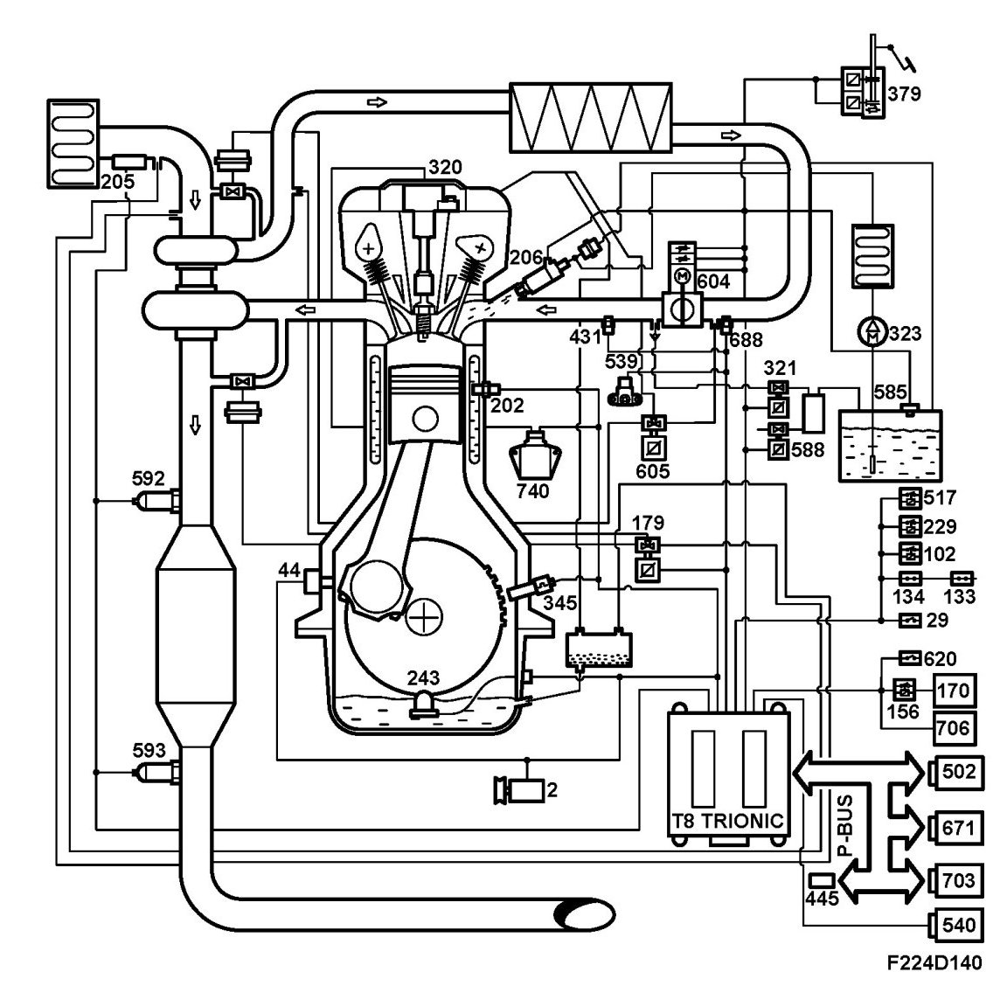

Brief Description
Brief Description
Overview
- Control module, Trionic T8 (589)

- Generator (2)
- Ignition lock (20)
- Contact, brake light (29)
- Engine oil pressure sensor (44)
- Fuel level sensor (46)
- Engine, fuel pump (323)
- Relay, fuel pump (102)
- Main relay, engine control system (229)
- Relay, oxygen sensor preheating (443)
- Electrical unit, petrol engine (727)
- Contact, clutch, cruise control (133)
- Contact, brake, cruise control (134)
- Boost pressure control valve (179a)
- Coolant temperature sensor (202)
- Mass air flow sensor (205)
- Injectors cyl. 1-4 (206a-d)
- Engine oil level sensor (243)
- Ignition coil with integral power stage, cyl. 1-4 (320a-d)
- Evap canister purge valve (321)
- Relay, A/C compressor (156)
- Relay, starting relay (517)
- Crankshaft position sensor (345)
- Accelerator pedal position sensor (379)
- Manifold absolute pressure sensor (431)
- Diagnostic socket, 16-pin, CARB (445)
- Atmospheric pressure sensor (539)
- Pressure sensor, EVAP (585)
- Solenoid valve, shut-off EVAP (588)
- Preheated oxygen sensor, front (592)
- Preheated oxygen sensor, rear (593)
- Throttle body actuator unit (604)
- Solenoid valve, turbo by-pass (605)
Pressure sensor, A/C (620)
- Intake manifold sensor (688)
- CIM (703)
- Pressure sensor, power steering fluid (739)
- CDM (740)
Saab Trionic T8 was developed by Saab and is a highly advanced engine control system. The main task of the ECM is to control the air mass, fuel and ignition.
When the driver presses the accelerator pedal, a pedal position sensor integrated into the pedal is activated.
This information, in the form of a voltage, is connected to the ECM which converts the voltage value into a torque request from the driver.
The torque request is then processed by the ECM with regard to the prevailing operating conditions and restrictions, and the result is an air mass request to achieve the torque requested by the ECM. The driver's requested torque can be higher than that requested by the ECM. This could be because e.g. the maximum engine torque is already being supplied at the current operating time, or due to TCS control or knock control.
The ECM controls the throttle area (opening angle) together with the turbo (wastegate) to achieve the correct torque, i.e. air mass per combustion.
The system has the following advantages:
- Turbo lag can be reduced to a minimum
- Exhaust emissions on load changes are reduced
- Idle control is integrated
- Load compensation is possible over the entire load and speed range
- Effective torque restriction is possible over the entire load and speed range
- Cruise control can easily be integrated into the system
The fuel injection function is sequential and controlled by air mass per combustion and engine speed as the main parameters.
Ignition takes place with individual ignition coils placed on the spark plug concerned. The plug together with the ignition coil and CDM are used to detect combustion and any knocking.
This means that neither a camshaft sensor nor a separate knock sensor are required.
Compared with the earlier Trionic T7 system, the following functions are new:
Description
Throttle body actuator unit (604)
- Contains the throttle position sensor and throttle motor with associated reducing gear.
- The throttle housing is spherical to improve the throttle area control at low loads.
- There is no mechanical limp-home function as on T7.
Accelerator pedal position sensor (379)
- Integrated into the pedal set for the accelerator pedal.
- Contains the pedal position sensor.
Ignition coil with integrated power module (320)
- Inductive separate ignition coils with ion stream measurement.
- The power module is integrated in the ignition coils.
CDM (740)
- The Combustion Detection Module first processes the ion stream signal from the ignition coils.
- Supplies information to the ECM on the combustion quality and any knocking.
Atmospheric pressure sensor (539)
- New design, sits mounted on the engine instead of integrated in the control module.
- Function as in the former Trionic T7 system.
Pressure sensor, power steering fluid (739)
- Informs the ECM when the power steering pressure exceeds 17 bar.
- Used to compensate for idle speed.
Engine oil level sensor (243)
- Informs the ECM when the oil level is low.
- Used for indication in SID.
Fuel level sensor (46)
- Informs the ECM of the prevailing fuel level.
- Used for certain diagnosis and driving computer functions, and to indicate the fuel level in MIU.
Relay, starting relay (517)
- Controlled by ECM.
Cooling fan control
- The fan logic is located in the ECM which also activates the fan relays.
- The fans can be run in four different positions.
Generator (2)
- The ECM controls whether or not the generator charges.
- Used to couple in the generator charge with a degree of delay after start-up, and in certain positions to disconnect the generator charge. In this way reduces the engine load occasionally on idle to stabilize the idle speed.
Engine oil pressure sensor (44)
- Informs the ECM when the oil pressure is low.
- Used for display in MIU and SID.
Pressure sensor, A/C (620)
- Informs ECM of the pressure in the A/C system high pressure side
- Used for load compensation, fan function, and sent as a bus message to be used by ACC.